I build AI systems that ship products — not demos. Multi-agent orchestration on top of Claude Code and MCP, wired into real full-stack products: web platforms, mobile apps and the infrastructure that runs them.



VORCL ↗ · agent-vorcl-flow ↗ · npm ↗
Currently building
- VORCL — applied-AI platform for business: products, academy and an authenticated workspace, localized in 10 languages.
- agent-vorcl-flow — an installable team of 20+ specialized sub-agents, skills and MCP tools for Claude Code, Codex, Cursor and Kimi CLI. One
npx, fully local, no cloud backend. - AGENTIC-OS — a local control plane for AI runtimes: projects, git worktrees, providers, vault, voice and background agent runs. Loopback-only by design; secrets never leave the host.
- aWallet — personal finance tracker with an AI assistant: budgets, savings goals, receipt parsing and spending insights, on iOS, Android and web.
How I work
clarify the goal → split into atomic steps → route each step to a specialist agent
→ verify with real output → ship
No "done" without proof — test runs, git status, a screenshot or a live endpoint.
Root cause before symptom. Isolated worktrees over shared working directories.
Try the toolkit
npx agent-vorcl-flow
Open to collaborations on applied-AI products, agent infrastructure and fintech.
youareaviss@gmail.com · vorcl.com